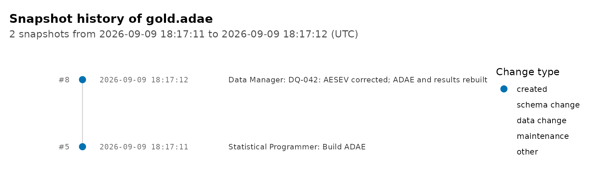

Clinical Trial Data Lake with ducklake
Source:vignettes/articles/clinical-trial-datalake.Rmd
clinical-trial-datalake.RmdAn EDC system logs every change to the data it holds. Once SDTM datasets leave it for statistical programming, that protection stops. Domains travel as XPT files, derived datasets pile up as copies in folders, and the questions a reviewer asks later get answered from memory and file names: which version of ADAE fed this table, what changed between two data cuts, who corrected that record and why.
This article builds a clinical trial data lake with ducklake that keeps those answers in the catalog. It loads an SDTM transfer as received, standardizes it, derives ADSL and ADAE with admiral, stores an analysis result next to the datasets that produced it, and then does the things that happen after the datasets exist: adds a derived variable, pushes a correction from SDTM through ADaM to the result, and reads an earlier version back. Every write is a commit with an author and a message, and the history is one query away. The data is the CDISC pilot study as shipped by pharmaversesdtm.
A lake with four layers
attach_ducklake() opens a lake, creating it first when
nothing is at the path yet. The article uses a temporary directory; a
study would use a project directory or a shared location, and Choosing a Deployment covers the catalog
options for a team.
attach_ducklake("clinical_trial_lake", lake_path = article_dir)The lake follows the medallion pattern, one schema per layer, so a table’s name says how far from the source it is and access can be granted layer by layer:
bronze SDTM as received: XPT files, blanks for missing values, labels
silver SDTM standardized: blanks are NA, labels live in the catalog
gold ADaM datasets, derived with admiral
results analysis results, derived from gold
with_transaction({
create_schema("bronze")
create_schema("silver")
create_schema("gold")
create_schema("results")
}, author = "Data Manager", commit_message = "Create the lake's layers")
#> Created schema "bronze".
#> Created schema "silver".
#> Created schema "gold".
#> Created schema "results".
#> Committed snapshot 1 (Data Manager): Create the lake's layersEvery write to a lake is a commit. with_transaction()
records who made it and why, lands everything inside it as one snapshot,
and rolls the whole thing back if any step fails. The confirmation names
the snapshot, and those numbers are what the history section reads back
at the end.
Bronze: the SDTM transfer
SDTM reaches the statistical programmers as SAS transport (XPT) files, the format FDA accepts. pharmaversesdtm ships the pilot domains as data frames, so the article writes four of them out as XPT first, to stand in for a transfer from data management. Version 5 of the format caps dataset and variable names at eight characters, which is one reason SDTM and ADaM names look the way they do.
sdtm <- list(
dm = pharmaversesdtm::dm,
ds = pharmaversesdtm::ds,
ex = pharmaversesdtm::ex,
ae = pharmaversesdtm::ae
)
sdtm_transfer <- file.path(article_dir, "sdtm_transfer")
dir.create(sdtm_transfer, showWarnings = FALSE)
iwalk(sdtm, \(data, domain) {
haven::write_xpt(
data,
file.path(sdtm_transfer, paste0(domain, ".xpt")),
version = 5,
name = domain
)
})The bronze layer keeps the transfer exactly as it arrived, so the lake can always show what data management sent and reprocess it when the cleaning logic changes. One commit loads the four domains:
with_transaction({
walk(names(sdtm), \(domain) {
create_table(
haven::read_xpt(file.path(sdtm_transfer, paste0(domain, ".xpt"))),
paste0("bronze.", domain)
)
})
}, author = "Data Manager", commit_message = "Load the SDTM transfer as received")
#> Stored 28 column labels as column comments.
#> Stored 13 column labels as column comments.
#> Stored 17 column labels as column comments.
#> Stored 35 column labels as column comments.
#> Committed snapshot 2 (Data Manager): Load the SDTM transfer as receivedEach create_table() reported the labels it stored. haven
reads the XPT variable labels into label attributes, and
the lake keeps them as column comments, where any client of the catalog
can read them:
get_table_comments("bronze.dm") |>
filter(object_type == "column") |>
select(column_name, comment) |>
head(5)
#> column_name comment
#> 1 ACTARM Description of Actual Arm
#> 2 ACTARMCD Actual Arm Code
#> 3 ACTARMUD Description of Unplanned Actual Arm
#> 4 AGE Age
#> 5 AGEU Age UnitsXPT also preserves the SDTM convention for a missing character value,
which is a blank. DTHDTC holds the date of death, so it is
blank for most subjects:
get_ducklake_table("bronze.dm") |>
count(dthdtc_blank = DTHDTC == "") |>
collect()
#> # A tibble: 2 × 2
#> dthdtc_blank n
#> <lgl> <dbl>
#> 1 FALSE 3
#> 2 TRUE 303Silver: blanks to NA, inside DuckDB
R analysis code, admiral included, expects NA where SAS
had a blank. admiral’s convert_blanks_to_na() does the
conversion on a data frame. On a lazy lake table it would do nothing,
because nothing has been read into R yet, so the silver layer writes the
same conversion as a dplyr pipeline: dbplyr translates
na_if() into NULLIF(), and
create_table() runs the whole query inside DuckDB and
writes the result straight into the lake. A silver table is derived
without its rows entering R.
# The in-database counterpart of admiral::convert_blanks_to_na(). A lazy
# table cannot inspect its own types, so a zero-row read supplies the
# character column names.
blanks_to_na <- function(tbl) {
types <- tbl |> head(0) |> collect()
chr_cols <- names(select(types, where(is.character)))
tbl |> mutate(across(all_of(chr_cols), ~ na_if(.x, "")))
}Each silver recipe is kept in a named list, under the name it is
materialized as, because the recipe that builds a layer is also its
lineage, which the results section comes back to. iwalk()
then hands each recipe and its name to create_table().
silver_recipes <- list(
"silver.dm" = get_ducklake_table("bronze.dm") |> blanks_to_na(),
"silver.ds" = get_ducklake_table("bronze.ds") |> blanks_to_na(),
"silver.ex" = get_ducklake_table("bronze.ex") |> blanks_to_na(),
"silver.ae" = get_ducklake_table("bronze.ae") |> blanks_to_na()
)
with_transaction(
iwalk(silver_recipes, create_table),
author = "Data Manager",
commit_message = "Standardize SDTM: blanks to NA"
)
#> Stored 28 column labels as column comments.
#> Stored 13 column labels as column comments.
#> Stored 17 column labels as column comments.
#> Stored 35 column labels as column comments.
#> Committed snapshot 3 (Data Manager): Standardize SDTM: blanks to NA
get_ducklake_table("silver.dm") |>
count(dthdtc_missing = is.na(DTHDTC)) |>
collect()
#> # A tibble: 2 × 2
#> dthdtc_missing n
#> <lgl> <dbl>
#> 1 TRUE 303
#> 2 FALSE 3The labels followed the columns: a table derived from a lake table keeps the comments of the columns it selects, so the silver layer is documented without another step. Views, Comments, and Labels covers what else lives in the catalog.
Gold: ADaM datasets with admiral
admiral works on data frames, so the gold layer starts by collecting
the silver tables. collect() reattaches the stored comments
as label attributes, and the frames look the way they would
have coming straight from haven, labels and all.
dm <- get_ducklake_table("silver.dm") |> collect()
ds <- get_ducklake_table("silver.ds") |> collect()
ex <- get_ducklake_table("silver.ex") |> collect()
ae <- get_ducklake_table("silver.ae") |> collect()
attr(dm$AGE, "label")
#> [1] "Age"ADSL
ADSL holds one record per subject: treatment, treatment dates,
population flags, disposition, and the groupings the analyses use. The
derivation below follows admiral’s ADSL template
(admiral::use_ad_template("adsl")) and keeps the parts a
safety analysis needs.
# End of study status from the disposition event, in the SBJTSTAT terms
format_eosstt <- function(x) {
case_when(
x == "COMPLETED" ~ "COMPLETED",
x == "SCREEN FAILURE" ~ NA_character_,
!is.na(x) ~ "DISCONTINUED",
TRUE ~ "ONGOING"
)
}
# One lookup derives the character and numeric versions of a grouping
agegr1_lookup <- exprs(
~condition, ~AGEGR1, ~AGEGR1N,
AGE < 18, "<18", 1,
between(AGE, 18, 64), "18-64", 2,
AGE > 64, ">64", 3,
is.na(AGE), "Missing", 4
)
# Exposure datetimes: impute start times to the first and end times to the
# last moment of the day, and keep the flags that say so
ex_ext <- ex |>
derive_vars_dtm(dtc = EXSTDTC, new_vars_prefix = "EXST") |>
derive_vars_dtm(dtc = EXENDTC, new_vars_prefix = "EXEN", time_imputation = "last")
ds_ext <- ds |>
derive_vars_dt(dtc = DSSTDTC, new_vars_prefix = "DSST")
adsl <- dm |>
# DOMAIN is an SDTM variable; ADSL has none
select(-DOMAIN) |>
mutate(TRT01P = ARM, TRT01A = ACTARM) |>
# First and last exposure
derive_vars_merged(
dataset_add = ex_ext,
filter_add = (EXDOSE > 0 | (EXDOSE == 0 & str_detect(EXTRT, "PLACEBO"))) &
!is.na(EXSTDTM),
new_vars = exprs(TRTSDTM = EXSTDTM, TRTSTMF = EXSTTMF),
order = exprs(EXSTDTM, EXSEQ),
mode = "first",
by_vars = exprs(STUDYID, USUBJID)
) |>
derive_vars_merged(
dataset_add = ex_ext,
filter_add = (EXDOSE > 0 | (EXDOSE == 0 & str_detect(EXTRT, "PLACEBO"))) &
!is.na(EXENDTM),
new_vars = exprs(TRTEDTM = EXENDTM, TRTETMF = EXENTMF),
order = exprs(EXENDTM, EXSEQ),
mode = "last",
by_vars = exprs(STUDYID, USUBJID)
) |>
derive_vars_dtm_to_dt(source_vars = exprs(TRTSDTM, TRTEDTM)) |>
derive_var_trtdurd() |>
# Disposition: randomization, end of study, death
derive_vars_merged(
dataset_add = ds_ext,
by_vars = exprs(STUDYID, USUBJID),
new_vars = exprs(RANDDT = DSSTDT),
filter_add = DSDECOD == "RANDOMIZED"
) |>
derive_vars_merged(
dataset_add = ds_ext,
by_vars = exprs(STUDYID, USUBJID),
new_vars = exprs(EOSDT = DSSTDT),
filter_add = DSCAT == "DISPOSITION EVENT" & DSDECOD != "SCREEN FAILURE"
) |>
derive_vars_merged(
dataset_add = ds_ext,
by_vars = exprs(STUDYID, USUBJID),
filter_add = DSCAT == "DISPOSITION EVENT",
new_vars = exprs(EOSSTT = format_eosstt(DSDECOD)),
missing_values = exprs(EOSSTT = "ONGOING")
) |>
derive_vars_dt(
new_vars_prefix = "DTH",
dtc = DTHDTC,
highest_imputation = "M",
date_imputation = "first"
) |>
# Population flags are Y or N, never blank
derive_var_merged_exist_flag(
dataset_add = ex,
by_vars = exprs(STUDYID, USUBJID),
new_var = SAFFL,
false_value = "N",
missing_value = "N",
condition = (EXDOSE > 0 | (EXDOSE == 0 & str_detect(EXTRT, "PLACEBO")))
) |>
derive_var_merged_exist_flag(
dataset_add = ds,
by_vars = exprs(STUDYID, USUBJID),
new_var = RANDFL,
false_value = "N",
missing_value = "N",
condition = DSDECOD == "RANDOMIZED"
) |>
derive_vars_cat(definition = agegr1_lookup)The DM variables kept their SDTM labels through the pipeline. The
derived variables are new, so they get theirs here, in the standard ADaM
wording; create_table() stores every label
attribute it finds, and the dataset label goes on the table itself.
adsl_labels <- list(
TRT01P = "Planned Treatment for Period 01",
TRT01A = "Actual Treatment for Period 01",
TRTSDTM = "Datetime of First Exposure to Treatment",
TRTSTMF = "Time of First Exposure Imput. Flag",
TRTEDTM = "Datetime of Last Exposure to Treatment",
TRTETMF = "Time of Last Exposure Imput. Flag",
TRTSDT = "Date of First Exposure to Treatment",
TRTEDT = "Date of Last Exposure to Treatment",
TRTDURD = "Total Treatment Duration (Days)",
RANDDT = "Date of Randomization",
EOSDT = "End of Study Date",
EOSSTT = "End of Study Status",
DTHDT = "Date of Death",
DTHDTF = "Date of Death Imputation Flag",
SAFFL = "Safety Population Flag",
RANDFL = "Randomized Population Flag",
AGEGR1 = "Pooled Age Group 1",
AGEGR1N = "Pooled Age Group 1 (N)"
)
adsl <- labelled::set_variable_labels(adsl, .labels = adsl_labels)
with_transaction({
create_table(adsl, "gold.adsl")
set_table_comment("gold.adsl", "Subject-Level Analysis Dataset")
}, author = "Statistical Programmer", commit_message = "Build ADSL")
#> Stored 45 column labels as column comments.
#> Commented table "gold.adsl".
#> Committed snapshot 4 (Statistical Programmer): Build ADSL
get_ducklake_table("gold.adsl") |>
select(USUBJID, TRT01A, TRTSDT, TRTDURD, SAFFL, EOSSTT, AGEGR1) |>
arrange(USUBJID) |>
head(5) |>
collect()
#> # A tibble: 5 × 7
#> USUBJID TRT01A TRTSDT TRTDURD SAFFL EOSSTT AGEGR1
#> <chr> <chr> <date> <dbl> <chr> <chr> <chr>
#> 1 01-701-1015 Placebo 2014-01-02 182 Y COMPLETED 18-64
#> 2 01-701-1023 Placebo 2012-08-05 28 Y DISCONTINUED 18-64
#> 3 01-701-1028 Xanomeline High Dose 2013-07-19 180 Y COMPLETED >64
#> 4 01-701-1033 Xanomeline Low Dose 2014-03-18 14 Y DISCONTINUED >64
#> 5 01-701-1034 Xanomeline High Dose 2014-07-01 183 Y COMPLETED >64
get_ducklake_table("gold.adsl") |>
count(EOSSTT) |>
arrange(EOSSTT) |>
collect()
#> # A tibble: 3 × 2
#> EOSSTT n
#> <chr> <dbl>
#> 1 COMPLETED 110
#> 2 DISCONTINUED 144
#> 3 NA 52Screen failures have no end-of-study status, and the population flags say which subjects the safety analyses count.
ADAE
ADAE is an occurrence dataset: one record per adverse event, with analysis dates, the treatment-emergent flag, and the first-occurrence flag the incidence tables need. The derivation is a function, because the correction section rebuilds the dataset with it. It follows admiral’s ADAE template.
adsl_vars <- exprs(TRTSDT, TRTEDT, DTHDT, EOSDT)
adae_labels <- list(
ASTDTM = "Analysis Start Datetime",
ASTDTF = "Analysis Start Date Imputation Flag",
ASTTMF = "Analysis Start Time Imputation Flag",
AENDTM = "Analysis End Datetime",
AENDTF = "Analysis End Date Imputation Flag",
AENTMF = "Analysis End Time Imputation Flag",
ASTDT = "Analysis Start Date",
AENDT = "Analysis End Date",
ASTDY = "Analysis Start Relative Day",
AENDY = "Analysis End Relative Day",
ADURN = "Analysis Duration (N)",
ADURU = "Analysis Duration Units",
ASEV = "Analysis Severity/Intensity",
AREL = "Analysis Causality",
TRTEMFL = "Treatment Emergent Analysis Flag",
AOCCPFL = "1st Occurrence of Preferred Term Flag"
)
build_adae <- function(ae, adsl) {
ae |>
derive_vars_merged(
dataset_add = adsl,
new_vars = adsl_vars,
by_vars = exprs(STUDYID, USUBJID)
) |>
# Analysis dates: partial dates are imputed, and the flags record how.
# A start date cannot fall before first dose, nor an end date after
# death or the end of study
derive_vars_dtm(
dtc = AESTDTC,
new_vars_prefix = "AST",
highest_imputation = "M",
min_dates = exprs(TRTSDT)
) |>
derive_vars_dtm(
dtc = AEENDTC,
new_vars_prefix = "AEN",
highest_imputation = "M",
date_imputation = "last",
time_imputation = "last",
max_dates = exprs(DTHDT, EOSDT)
) |>
derive_vars_dtm_to_dt(exprs(ASTDTM, AENDTM)) |>
derive_vars_dy(reference_date = TRTSDT, source_vars = exprs(ASTDT, AENDT)) |>
derive_vars_duration(
new_var = ADURN,
new_var_unit = ADURU,
start_date = ASTDT,
end_date = AENDT
) |>
mutate(ASEV = AESEV, AREL = AEREL) |>
# Treatment emergent: on or after first dose, up to 30 days after the
# last one
derive_var_trtemfl(
trt_start_date = TRTSDT,
trt_end_date = TRTEDT,
end_window = 30
) |>
# First occurrence of each preferred term, among treatment-emergent
# events only
restrict_derivation(
derivation = derive_var_extreme_flag,
args = params(
by_vars = exprs(USUBJID, AEDECOD),
order = exprs(ASTDTM, AESEQ),
new_var = AOCCPFL,
mode = "first"
),
filter = TRTEMFL == "Y"
) |>
# The rest of ADSL, so the dataset analyzes on its own
derive_vars_merged(
dataset_add = select(adsl, !!!negate_vars(adsl_vars)),
by_vars = exprs(STUDYID, USUBJID)
) |>
# restrict_derivation() rebinds the rows and drops label attributes on
# the way, so the SDTM and ADSL labels are copied back
labelled::copy_labels_from(ae) |>
labelled::copy_labels_from(adsl) |>
labelled::set_variable_labels(.labels = adae_labels)
}
adae <- build_adae(ae, adsl)
with_transaction({
create_table(adae, "gold.adae")
set_table_comment("gold.adae", "Adverse Events Analysis Dataset")
}, author = "Statistical Programmer", commit_message = "Build ADAE")
#> Stored 94 column labels as column comments.
#> Commented table "gold.adae".
#> Committed snapshot 5 (Statistical Programmer): Build ADAE
get_ducklake_table("gold.adae") |>
filter(TRTEMFL == "Y") |>
arrange(USUBJID, ASTDT, AESEQ) |>
select(USUBJID, AEDECOD, ASTDT, ASTDTF, ASEV, AOCCPFL) |>
head(5) |>
collect()
#> # A tibble: 5 × 6
#> USUBJID AEDECOD ASTDT ASTDTF ASEV AOCCPFL
#> <chr> <chr> <date> <chr> <chr> <chr>
#> 1 01-701-1015 APPLICATION SITE ERYTHEMA 2014-01-03 NA MILD Y
#> 2 01-701-1015 APPLICATION SITE PRURITUS 2014-01-03 NA MILD Y
#> 3 01-701-1015 DIARRHOEA 2014-01-09 NA MILD Y
#> 4 01-701-1023 ERYTHEMA 2012-08-07 NA MILD Y
#> 5 01-701-1023 ERYTHEMA 2012-08-07 NA MODERATE NAThe other analysis datasets a study needs come from the same
templates and land in the lake the same way: build the data frame with
admiral, label it, and create_table() it into
gold inside a commit.
Results: an analysis result stored with its inputs
A treatment-emergent adverse event summary is a query over gold: events by actual treatment and severity, with the safety population as the denominator, which has to come from ADSL because subjects with no events are not in ADAE. Written as a lazy pipeline, the summary runs inside DuckDB and lands in the results layer as a table of its own, versioned like everything else, with the commit saying which display it belongs to.
safety_n <- get_ducklake_table("gold.adsl") |>
filter(SAFFL == "Y") |>
group_by(TRT01A) |>
summarise(n_saf = n_distinct(USUBJID), .groups = "drop")
teae_recipe <- get_ducklake_table("gold.adae") |>
filter(TRTEMFL == "Y") |>
group_by(TRT01A, ASEV) |>
summarise(
n_subjects = n_distinct(USUBJID),
n_events = n(),
.groups = "drop"
) |>
left_join(safety_n, by = "TRT01A") |>
mutate(pct_subjects = 100 * n_subjects / n_saf) |>
arrange(TRT01A, ASEV)
with_transaction(
create_table(teae_recipe, "results.teae_summary"),
author = "Statistician",
commit_message = "Table 14.3.1: TEAEs by treatment and severity"
)
#> Stored 2 column labels as column comments.
#> Committed snapshot 6 (Statistician): Table 14.3.1: TEAEs by treatment and
#> severity
get_ducklake_table("results.teae_summary") |> collect()
#> # A tibble: 9 × 6
#> TRT01A ASEV n_subjects n_events n_saf pct_subjects
#> <chr> <chr> <dbl> <dbl> <dbl> <dbl>
#> 1 Placebo MILD 58 210 86 67.4
#> 2 Placebo MODERATE 25 65 86 29.1
#> 3 Placebo SEVERE 5 6 86 5.81
#> 4 Xanomeline High Dose MILD 64 286 72 88.9
#> 5 Xanomeline High Dose MODERATE 46 118 72 63.9
#> 6 Xanomeline High Dose SEVERE 8 10 72 11.1
#> 7 Xanomeline Low Dose MILD 64 232 96 66.7
#> 8 Xanomeline Low Dose MODERATE 58 170 96 60.4
#> 9 Xanomeline Low Dose SEVERE 16 25 96 16.7Where the numbers came from
ducklake records lineage at the table level: which tables each
snapshot touched, and why. The companion package dplyneage traces lineage
within a query, from each output column back to the source columns it
came from. The recipe that built the summary is a lazy table, which is
what extract_lineage() reads. Passing it under the name it
was materialized as draws the hop from gold to results, and the gold
nodes show only the columns the recipe touched.
library(dplyneage)
teae_lineage <- extract_lineage(list("results.teae_summary" = teae_recipe))
lineage_flow(teae_lineage, height = "450px")In an R session the diagram is interactive: hover a column for its type and label, click one to isolate what feeds it. The same lineage answers as data:
lineage_upstream(teae_lineage, "results.teae_summary.pct_subjects")
#> [1] "gold.adae.USUBJID" "gold.adsl.USUBJID"The admiral layers are not in the picture, and cannot be: admiral
runs on data frames and leaves no query tree behind. Their traceability
is the metadata a submission carries anyway, since the ADaM
Implementation Guide (section 2.2) asks for the derivation of every
analysis variable to be described in metadata. So the division of labor
is: lineage from the lake wherever the pipeline is a query, ADaM
metadata where the standard asks for it. The silver recipes stitch into
the same graph with extract_lineage(silver_recipes), and
dplyneage’s lineage
that travels with the data article stores each hop’s lineage on the
commit that wrote it, through commit_extra_info, so a
snapshot’s rows and their derivation come back together.
Working with the lake
Queries across layers
Lake tables are lazy: dplyr verbs become SQL that DuckDB runs, and only the result reaches R. A check that every adverse event record belongs to a subject in ADSL reads the silver and gold layers together without collecting either:
get_ducklake_table("silver.ae") |>
anti_join(get_ducklake_table("gold.adsl"), by = "USUBJID") |>
count(name = "ae_records_without_adsl_subject") |>
collect()
#> # A tibble: 1 × 1
#> ae_records_without_adsl_subject
#> <dbl>
#> 1 0A derived variable added in place
When a reviewer asks for the protocol’s age grouping as well, the
column is declared, filled with an in-database UPDATE, and
labelled, as one commit. No rows pass through R, and the versions before
and after are both readable.
with_transaction({
add_table_column("gold.adsl", "AGEGR2", "VARCHAR")
add_table_column("gold.adsl", "AGEGR2N", "INTEGER")
get_ducklake_table("gold.adsl") |>
mutate(
AGEGR2 = case_when(AGE < 65 ~ "<65", AGE <= 80 ~ "65-80", TRUE ~ ">80"),
AGEGR2N = case_when(AGE < 65 ~ 1L, AGE <= 80 ~ 2L, TRUE ~ 3L)
) |>
ducklake_exec()
set_column_comments(
"gold.adsl",
AGEGR2 = "Pooled Age Group 2",
AGEGR2N = "Pooled Age Group 2 (N)"
)
}, author = "Statistical Programmer", commit_message = "Add the protocol's age grouping, AGEGR2")
#> Added column "AGEGR2" (VARCHAR) to "gold.adsl".
#> ℹ Metadata-only change; no data files were rewritten.
#> Added column "AGEGR2N" (INTEGER) to "gold.adsl".
#> ℹ Metadata-only change; no data files were rewritten.
#> Commented 2 columns on "gold.adsl".
#> Committed snapshot 7 (Statistical Programmer): Add the protocol's age grouping,
#> AGEGR2
get_ducklake_table("gold.adsl") |>
count(AGEGR2N, AGEGR2) |>
arrange(AGEGR2N) |>
collect()
#> # A tibble: 3 × 3
#> AGEGR2N AGEGR2 n
#> <int> <chr> <dbl>
#> 1 1 <65 42
#> 2 2 65-80 172
#> 3 3 >80 92Modifying Tables covers the
choice between ducklake_exec(), the rows_*()
functions, merge_into(), and
replace_table().
A correction that flows downstream
Data corrections do not start in ADaM. A query on an adverse event
resolves, the SDTM record changes, and everything derived from it is
rebuilt by running the same programs again. In the lake that is one
transaction: the SDTM correction as a single in-place update through
rows_update(), ADAE rebuilt by the same
build_adae(), and the summary rebuilt from its recipe.
replace_table() rewrites a table as one versioned change
and carries its labels and settings over. Either all three land as one
snapshot, or none of them does.
with_transaction({
rows_update(
get_ducklake_table("silver.ae"),
data.frame(USUBJID = "01-701-1015", AESEQ = 1, AESEV = "SEVERE"),
by = c("USUBJID", "AESEQ")
)
ae <- get_ducklake_table("silver.ae") |> collect()
adsl <- get_ducklake_table("gold.adsl") |> collect()
replace_table(build_adae(ae, adsl), "gold.adae")
replace_table(teae_recipe, "results.teae_summary")
}, author = "Data Manager", commit_message = "DQ-042: AESEV corrected; ADAE and results rebuilt")
#> Committed snapshot 8 (Data Manager): DQ-042: AESEV corrected; ADAE and results
#> rebuiltThe change feed shows what the correction did to
silver.ae, as the value before and the value after:
correction <- max(list_table_snapshots()$snapshot_id)
get_table_changes("silver.ae", correction, correction) |>
select(change_type, USUBJID, AESEQ, AESEV) |>
collect()
#> # A tibble: 2 × 4
#> change_type USUBJID AESEQ AESEV
#> <chr> <chr> <dbl> <chr>
#> 1 update_postimage 01-701-1015 1 SEVERE
#> 2 update_preimage 01-701-1015 1 MILDThat is the shape of an audit trail as FDA describes it in its 2024
questions and answers on electronic systems in clinical investigations
(Q12 to Q14): the date and time (snapshot_time), the
individual (author), the old and the new value (the change
feed), and the reason (commit_message). Prior entries are
never obscured: a change never overwrites an earlier version in place,
and the rows before it stay readable until a retention policy expires
them. ICH E6(R3) (section 4.2.2) puts audit trails and their review
inside a risk-based data governance process. The lake does not validate
itself, though: qualifying the computing environment that runs these
programs stays with the sponsor.
The history
list_table_snapshots() lists every commit in the lake,
across all four layers, with the author and message each one was
given:
list_table_snapshots() |>
select(snapshot_id, snapshot_time, author, commit_message)
#> snapshot_id snapshot_time author
#> 1 0 2026-09-09 18:17:06 <NA>
#> 2 1 2026-09-09 18:17:06 Data Manager
#> 3 2 2026-09-09 18:17:07 Data Manager
#> 4 3 2026-09-09 18:17:08 Data Manager
#> 5 4 2026-09-09 18:17:10 Statistical Programmer
#> 6 5 2026-09-09 18:17:11 Statistical Programmer
#> 7 6 2026-09-09 18:17:11 Statistician
#> 8 7 2026-09-09 18:17:12 Statistical Programmer
#> 9 8 2026-09-09 18:17:12 Data Manager
#> commit_message
#> 1 <NA>
#> 2 Create the lake's layers
#> 3 Load the SDTM transfer as received
#> 4 Standardize SDTM: blanks to NA
#> 5 Build ADSL
#> 6 Build ADAE
#> 7 Table 14.3.1: TEAEs by treatment and severity
#> 8 Add the protocol's age grouping, AGEGR2
#> 9 DQ-042: AESEV corrected; ADAE and results rebuiltplot_snapshots() draws one table’s history as a
timeline, with the author and message of each commit. For ADAE, that is
its build and the rebuild the correction caused:
plot_snapshots("gold.adae")
Any earlier version of a table can be read as a lazy table. ADAE before the correction, next to ADAE now:
adae_versions <- list_table_snapshots("gold.adae")
adae_versions |> select(snapshot_id, author, commit_message)
#> snapshot_id author
#> 1 5 Statistical Programmer
#> 2 8 Data Manager
#> commit_message
#> 1 Build ADAE
#> 2 DQ-042: AESEV corrected; ADAE and results rebuilt
get_ducklake_table_version("gold.adae", min(adae_versions$snapshot_id)) |>
filter(USUBJID == "01-701-1015", AESEQ == 1) |>
select(USUBJID, AESEQ, ASEV) |>
collect()
#> # A tibble: 1 × 3
#> USUBJID AESEQ ASEV
#> <chr> <dbl> <chr>
#> 1 01-701-1015 1 MILD
get_ducklake_table("gold.adae") |>
filter(USUBJID == "01-701-1015", AESEQ == 1) |>
select(USUBJID, AESEQ, ASEV) |>
collect()
#> # A tibble: 1 × 3
#> USUBJID AESEQ ASEV
#> <chr> <dbl> <chr>
#> 1 01-701-1015 1 SEVEREAn analysis run against a data cut pins the whole session to a
snapshot with attach_ducklake(snapshot_version = ), so
every table it reads is the version of that cut. Time Travel covers that, along with reading
as of a timestamp, comparing versions, and restoring one.
Before archival
Small changes such as the correction above are stored inline in the catalog rather than as tiny Parquet files, which is what keeps a lake with many small commits tidy. Before an archive or a transfer, flush them, so the data path is a self-describing set of Parquet files that any tool can read without ducklake, next to the catalog that holds the history. Data Inlining has the details.
flush_inlined_data()
#> Flushed 10 rows from 2 tables to Parquet.
#> schema_name table_name rows_flushed
#> 1 results teae_summary 9
#> 2 silver ae 1Detach
detach_ducklake("clinical_trial_lake")Detaching deletes nothing. Attaching the same path again picks up where this session left off, history included.
Learn more
- Modifying Tables: choosing how to change a table
- Views, Comments, and Labels: shared query logic and documentation that live in the lake
- Time Travel: every way to read the past
- Working with Transactions: commit metadata and several writers
- Visualizing Your Lake: snapshot history, change volume, storage layout
- Data Inlining: small writes and when to flush them
- Choosing a Deployment: catalog backends, storage, and access for a team
- dplyneage’s column lineage for ducklake pipelines, project-level lineage for targets pipelines, and lineage that travels with the data